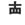

| SHIN |
|
People who refrain from speaking their heart really really SHINE in Japanese society. |
| つつし*む |
to be cool-headed, prudent, or discreet when it comes to something potentially disruptive. Could also be translated as 'refrain', like, 'refrain from smoking or talking loudly.' 'Don't say fuck. Watch your lanauge when you talk to nuns.'
★★☆☆☆ |
| 慎重 な |
discreet
★★★☆☆
FP
discreet, careful |
| 不謹慎 な |
imprudent
☆☆☆☆☆
imprudent, indiscreet |
| Meaning | Hint | Radical | |
|---|---|---|---|
| 慎 | refrain / be prudent | TRUTH | 実 |
| 懐 | nostalgia | UFO |  |
Refrain from speaking the TRUTH to a person nostalgic for UFOs. Actually the space invader days were pretty bad but why argue?
|
discreet, prudent
弁える 慎重 思慮深い 用心 |
|
refrain
慎む 謹む |
|
repress
慎む 抑える 抑制 控える |
|
systematic, methodical
系統 体系てきに 慎重に考える 思料深い 数量化 |
 KANJIDAMAGE
KANJIDAMAGE